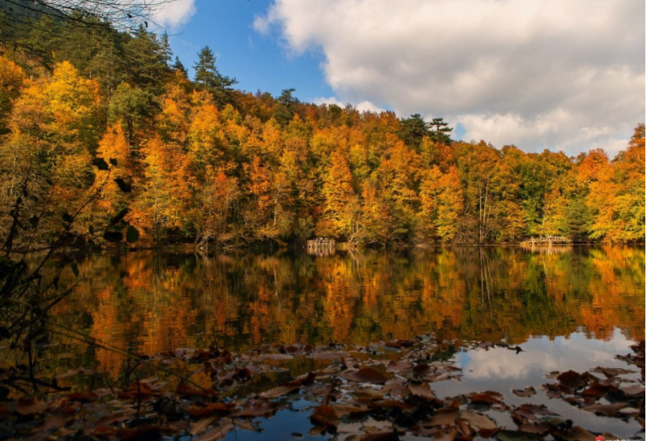
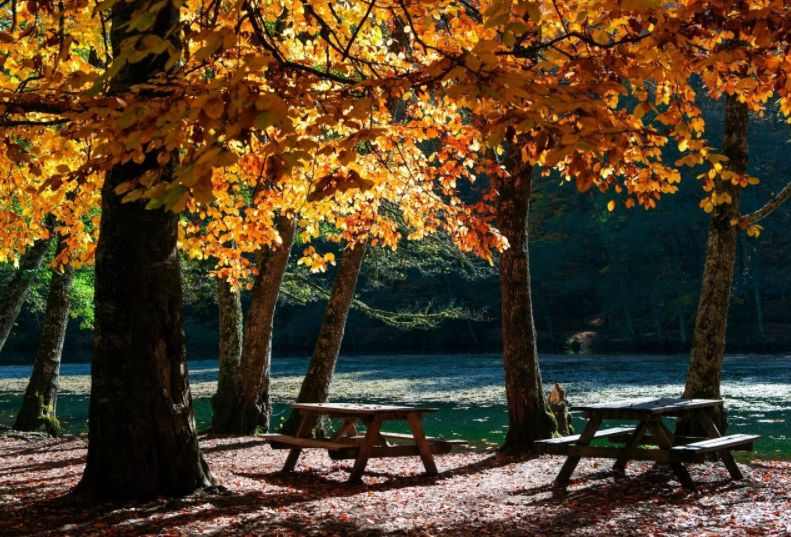
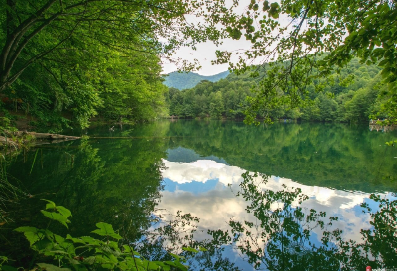

YEDİGÖLLER MİLLİ PARKI
Heyelanın oluşturduğu İnce Göl, Sazlı Göl, Kuru Göl, Nazlı Göl, Derin Göl, Büyük Göl ve Serin Gölü olmak üzere 7 adet göl bulunuyor. Milli parkında ismi buradaki göllerin sayısından geliyor.Bu göllerden en büyüğü Büyük göldür. Bu göl ülkemizde alabalık üretimi yapılan ilk tesisin burada olmasından dolayında ayrıca bir öneme sahip. Yaban hayatı ve hayvan çeşitliliği ile çok sayıda bitki türünün bulunduğu milli park, bu açıdan da oldukça zengin.Burada yer alan hayvan türlerine örnek vermek gerekirse Geyik, Ayı, Yaban Domuzu, Sincap, Kurt, Tilki ve tavşan gibi hayvanlar yer alıyor. Ayrıca çok sayıda kuş türü bulunuyor. Ağaç türlerine bakacak olursak, burada karşılaşabileceğiniz ağaç türleri ise meşe, Kızılağaç, sarı çam, karaçam, göknar, gürgen, ıhlamur, dişbudak ve bunun gibi daha pek çok ağaç türü parkta yer alıyor.
Ne Zaman Gidilir?
Yedigöller her mevsim ziyaret edilebilir ancak sonbahar ve ilkbahar aylarında burası bir başka güzel oluyor. Mevsimin doğa üzerinde ki etkisi ile harika bir renk şöleni sizleri bekliyor olacaktır. Ancak en yi zaman sonbahar ayıdır. Yaz aylarında oldukça yoğun oluyor. Kamp severlerinde bu aylarda bölgede yoğun olması ile kalabalık bir sezon olmuş oluyor.
Neler Yapılır?
 Öncelikle farklı bitki türlerinin bir araya geldiği eşsiz bir görüntünün oluştuğu harika bir yer Yedigöller. Farkında olmadan ilk yapacağınız eylem, temiz havayı ciğerlerinize solumak olacaktır. Daha sonrasında tabiatın içerisinden geçen patika yollarda güzel bir yürüyüş yapmak olabilir.Milli parkta bulunan 7 gölü görebilir, seyir teraslarından eşsiz manzaranın tadını çıkarabilirsiniz. Fotoğraf çekimi için harika yerlerden biri olan milli park, özellikle bahar aylarında çok güzel manzaralara sahip oluyor.
Kamp severler için kampçılık ve günübirlik ziyaret edecekler içinde piknik yapmak gibi seçenekleriniz bulunuyor.
Bolu Yedigöller Mangal Yasak Mı?
Mangal yapmak yasak. Ancak yol üzerinde mangal yapabileceğiniz yerler bulunuyor. Mangal dışında dilerseniz yanınızda yiyecek ve piknik malzemelerinizi götürüp güzel bir piknik yapabilirsiniz.
Yedigöller Nerede?
Yedigöller milli Parkı, Bolu ilimizde yer almaktadır. Bolu Yedigöller arası 44 km, Ankara Yedigöller arası 225 km ve İstanbul Yedigöller arası 300 km mesafe bulunuyor.Bolu tarafından ulaşım yollarının iyi olması sebebiyle daha rahat olacaktır. Milli parka giden yollarda güzel manzaralar ile hoş bir vakit geçirerek yolculuk yapacaksınız. Virajlı ve doğanın içerisinden geçen manzaralı yolların keyfine varın. Yol mesafesine göre biraz uzun sürecektir ve son kısma doğru mıcır yol, yavaş ve tozlu kısa bir yolculuk yaşamanıza sebep olacak.